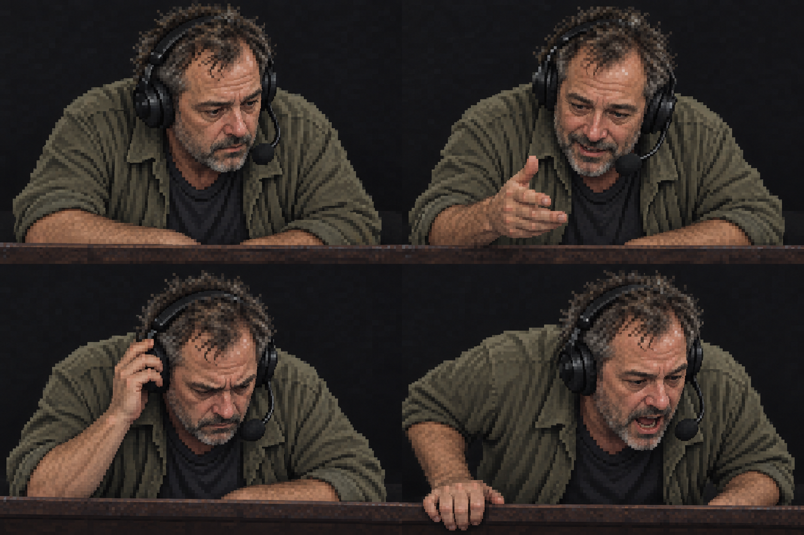
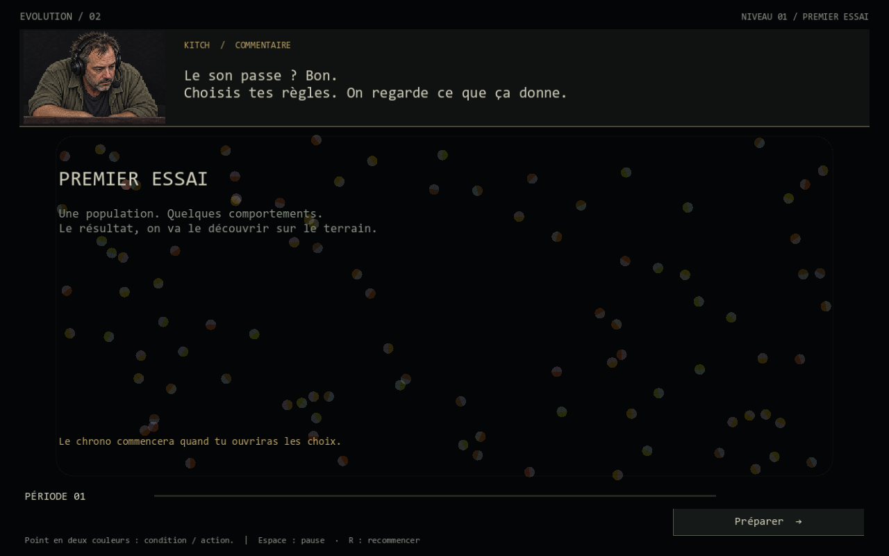
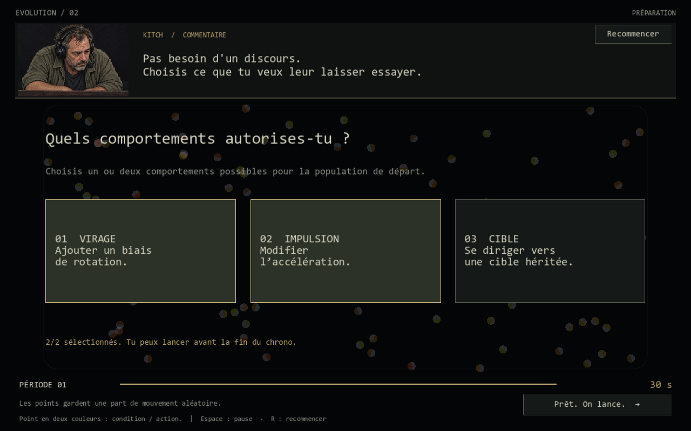
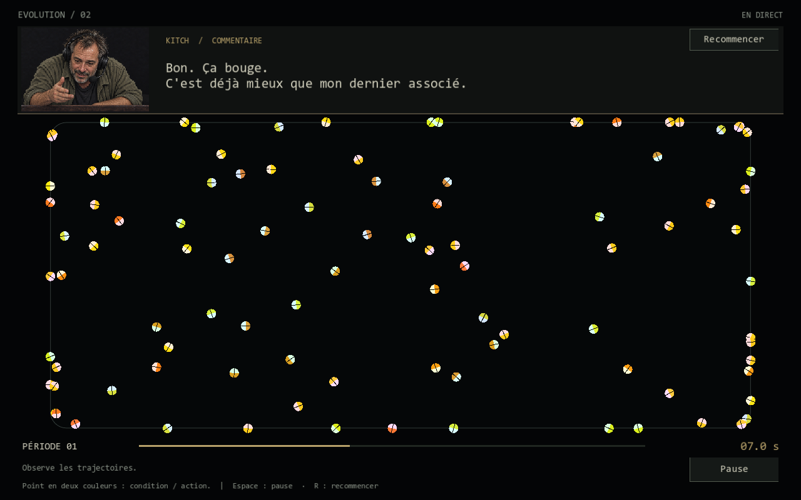
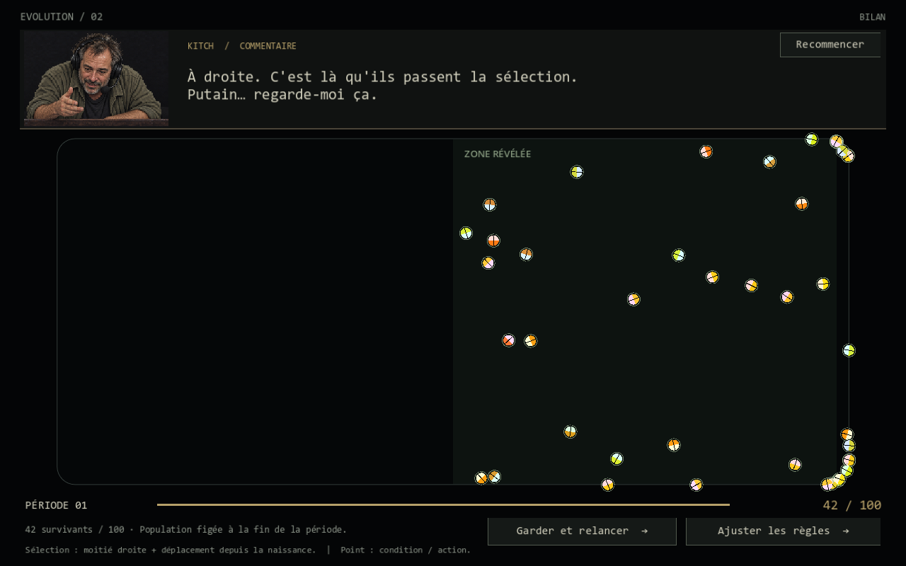

Un gars qui regarde la partie.
Direction active : un commentateur ordinaire, un peu usé, penché en avant sur sa balustrade. Le regard descend vers le plateau. Casque de transmission, couleurs sourdes, éclairage simple, visage construit comme une photo pixelisée. L'enthousiasme, la tension et le cri viennent pendant la manche.
Lanceur Windows du prototypeInstructions et fonctionnement
Si le navigateur ne lance pas les fichiers .cmd, ouvrir Lancer-Evolution2.cmd à la racine du projet.
Visage et postures

Placement proposé
Le bandeau du haut sert de cabine de commentaire. Le portrait est accoudé au-dessus du plateau ; la réplique reste à sa droite. Le plateau occupe le centre et la plus grande surface. Une seconde voix d'analyste pourra prendre place dans cette cabine lors d'une prochaine exploration ; cet essai utilise une seule voix pour juger le visage et le rythme.
Le personnage : ce qu'on garde en coulisses
Amateur d'armes, consommateur de champignons psychédéliques, anti-establishment. Il vit discrètement sur une île, probablement dans un paradis fiscal des Caraïbes ou du Pacifique, et évite les questions sur son adresse. Son âge exact et son parcours restent inconnus. Les histoires d'entrepreneur proposées en V01 deviennent des possibilités de passé, à confirmer plus tard.
Ces éléments sont des notes d'auteur. On les découvre par fragments au fil du jeu. Le premier niveau le montre surtout en train de regarder, de comprendre, de s'enthousiasmer ou de stresser. Son visage reste celui d'un homme normal.
« Les coordonnées ? Pour m'envoyer quoi ? »
Captures du vrai prototype Godot
Les images ci-dessous proviennent du rendu du jeu. Elles ne sont pas des illustrations de gameplay inventé.




Ce qui fonctionne
- Moteur du projet voisin : 48 fichiers de simulation et d'évolution copiés sans modification, vérifiés par SHA-256.
- Choix branchés sur le réservoir de gènes existant. Au premier départ, ils influencent la population initiale ; ensuite ils orientent les nouvelles règles des descendants, sans réécrire leurs parents.
- Vraie sélection géométrique : moitié droite et déplacement d'au moins six pixels depuis la naissance. Ce second critère existe déjà dans le moteur.
- Reproduction existante, mutations, évolution des générations, pause, expiration de préparation et remise à zéro.
- Deux couleurs par point conservées : condition et action. Aucun code couleur d'équipes ajouté.
Compilation sans erreur ni avertissement. 122 vérifications de flux, de sélection et d'interface passent dans Godot. Les quatre captures ont été inspectées. Le prototype ne contient pas encore de bouche animée, de doublage, de son de clic ou de second analyste.
Le projet voisin est resté intact. Les paramètres du scénario et les dialogues sont centralisés dans prototype/scripts/presentation/LevelOneSession.cs. Les PNG de cette galerie sont dans art-direction/v02/captures.